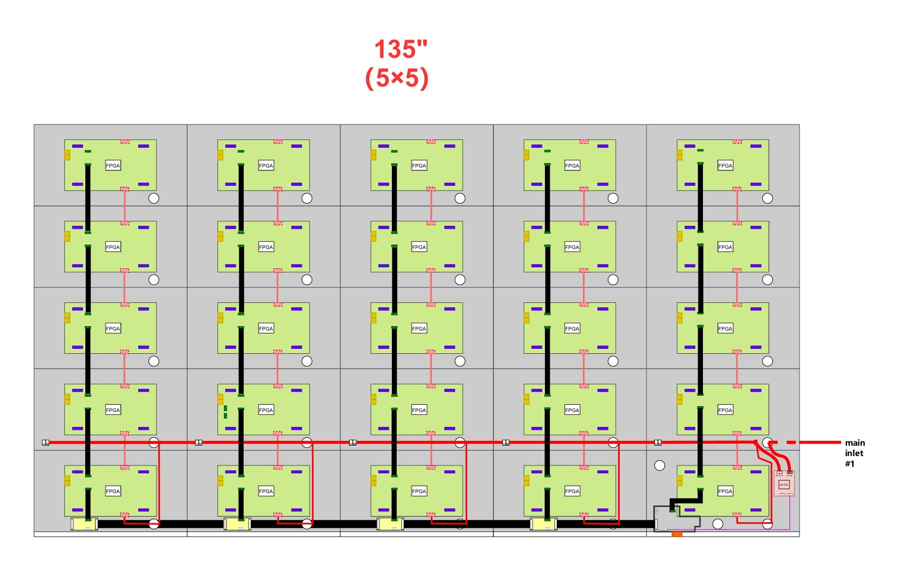
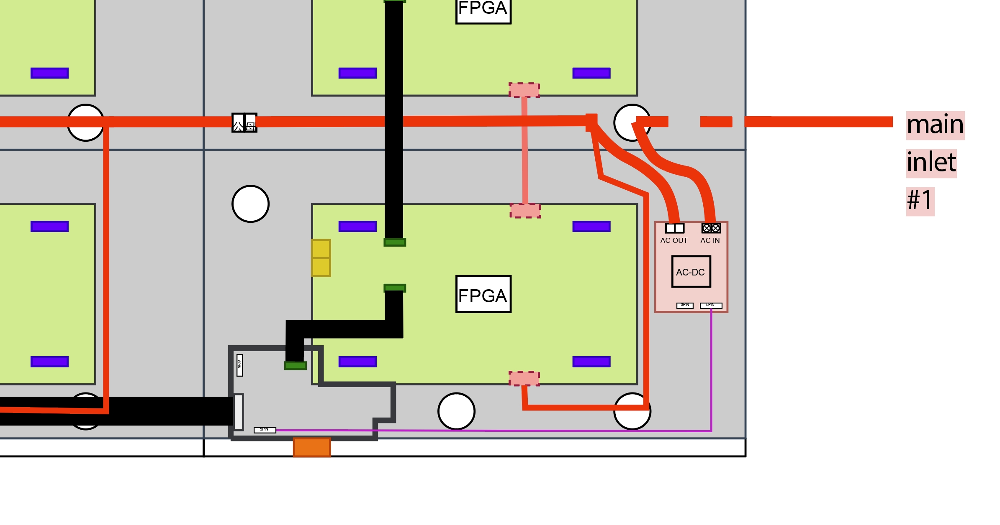
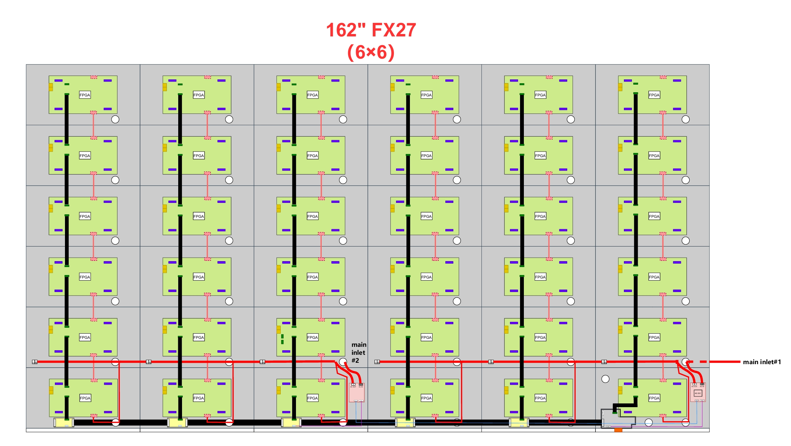
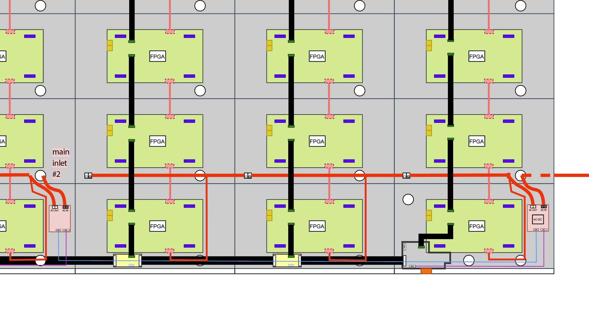
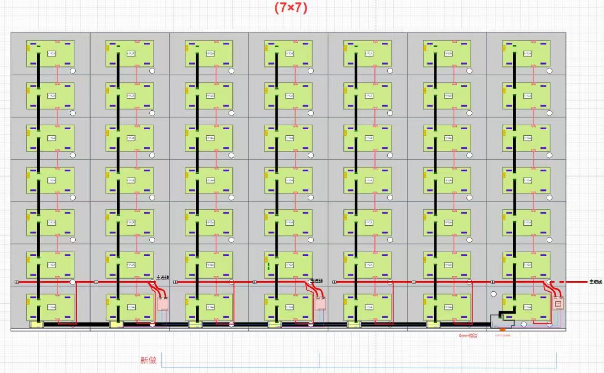
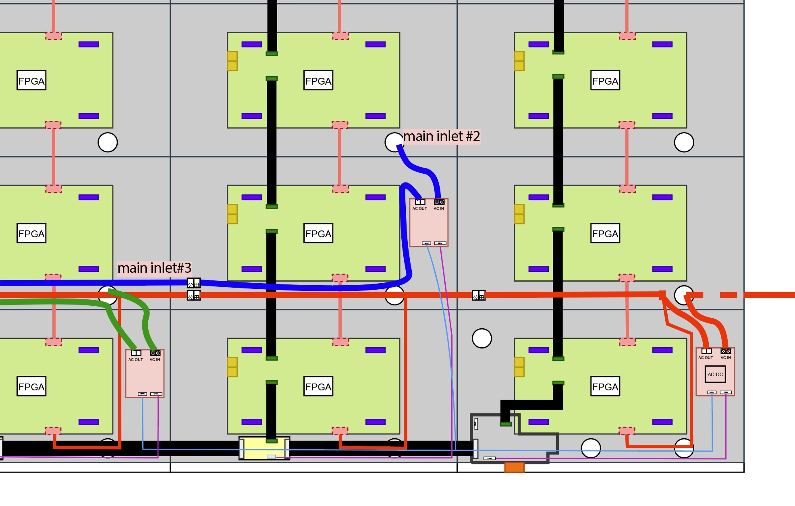
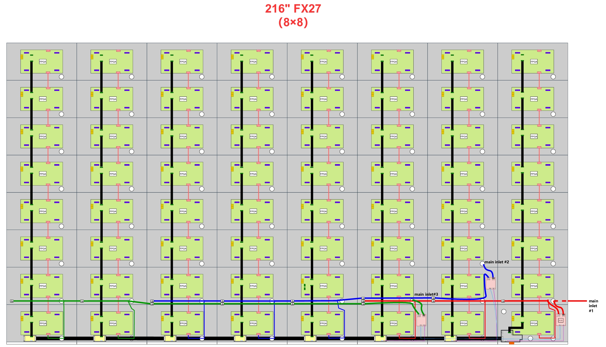

135″

135inch.png
135inch_Wire_Harness_Zoom.pngInstallation Reference
eXview Edge family — 135″, 162″, 190″ and 216″. How the screens are supplied, switched and interconnected, and what your electrician needs to plan the circuit.
← In a hurry? Read the 2-minute quick referenceAll four models share one 600 × 337.5 mm cabinet. Larger sizes are built by adding a row and a column of the same cabinet — nothing changes inside the cabinet itself.
| Term | What it means |
|---|---|
| Cabinet | One 600 × 337.5 mm panel, 4 kg excl. mounting bar, individually numbered (see §03). |
| 3-in-1 board | The board inside every cabinet combining power supply, receiving card and HUB. This is the screen's real power supply — one per cabinet. |
| “PSU” | The AC switching module(s) at the bottom of the screen. Functionally a relay, not a power supply — see the note below. |
| Main PSU | The one PSU that carries the AC‑DC (12 V) converter. It is the only source of 12 V for the whole screen. |
| Secondary PSU | Any additional PSU. It has no AC‑DC converter of its own — it receives 12 V from the main PSU. |
| Sending card | The video/control processor. Powered from the main PSU and stays alive in standby. |
| Distribution board | The point each secondary PSU connects to for power and standby signalling. |
| Main inlet | One AC supply entry point. There is exactly one per PSU. |
The modules labelled PSU in the drawings and in this guide are used as relays: the actual power supplies are the per-cabinet 3-in-1 boards. The term PSU is kept deliberately, in drawings, documentation and service communication, because it is the name your service contact and the factory both already use — renaming it would create confusion, not remove it.
The main PSU's AC‑DC converter is the only source of 12 V in the screen. That 12 V feeds the AC OUT relay coil in every PSU, the sending card, and — via the inter-PSU link — every secondary PSU. Everything else in the screen only receives power once a relay switches AC through to it.
| Domain | Live in standby? | Contains |
|---|---|---|
| Always-on (12 V) | Yes | AC‑DC converter, all AC OUT relay coils, the sending card |
| Switched (AC OUT) | No | Every 3-in-1 board (power/receiving/HUB) and every LED IC driver |
The family has no fans; the always-on domain contains nothing beyond the items above — HDMI detect, IR receive and the physical button are all handled by the sending card itself.
| Active standby (Expromo default) | Eco standby | |
|---|---|---|
| Measured consumption | 14 W | 0.5 W |
| LAN / UDP control | Yes | No |
| RS232 | Yes | Yes |
| Physical button / IR remote | Yes | Yes |
The ≤0.5 W standby figure quoted on the datasheet is the Eco standby value, not the delivered default. Expromo ships screens in Active standby so that LAN/UDP wake, remote monitoring and control-system polling keep working — so budget 14 W for standby consumption unless Eco mode has been deliberately configured. Eco mode drops network connectivity entirely and should not be used on a screen driven by a network control system.
In either mode, the entire switched domain is fully de-energised — every 3-in-1 board and LED driver loses AC, not just video. The PSUs use zero-cross relays to minimise inrush current when the switched domain is re-energised.
Cabinet 1 is always the top-left cabinet, viewed from the front of the screen. Numbering is column-major: it runs top→bottom down the leftmost column, then continues top→bottom in the next column to the right, and so on across the screen.
For an n×n grid with total cabinet count N = n², and 1-based row/column counted from the top-left, front view:
cabinet_number = ((column − 1) × n) + row
| Col 1 | Col 2 | Col 3 | Col 4 | Col 5 | |
|---|---|---|---|---|---|
| Row 1 | 1 | 6 | 11 | 16 | 21 |
| Row 2 | 2 | 7 | 12 | 17 | 22 |
| Row 3 | 3 | 8 | 13 | 18 | 23 |
| Row 4 | 4 | 9 | 14 | 19 | 24 |
| Row 5 | 5 | 10 | 15 | 20 | 25 |
Anchors, for any size: top-left = 1, bottom-left = n, top-right = N−n+1, bottom-right = N.
These placements are identical across the whole family — no exceptions.
| Model | Sending card + main PSU | Supply cable entry cabinet |
|---|---|---|
| 135″ | Cabinet 25 (bottom-right) | Cabinet 24 |
| 162″ | Cabinet 36 (bottom-right) | Cabinet 35 |
| 190″ | Cabinet 49 (bottom-right) | Cabinet 48 |
| 216″ | Cabinet 64 (bottom-right) | Cabinet 63 |
N). No exceptions across the family.N−1) and runs down to the main PSU's AC IN.These are the fixed hardware facts for each size: how many PSUs/main inlets it has, and its power draw from the official datasheet. Circuit sizing, protective devices and phase allocation are not specified by Expromo — that is the installing electrician's decision, made for the specific site. EST marks a figure still pending final production test.
| Specification | 135″ | 162″ | 190″ | 216″ |
|---|---|---|---|---|
| Cabinet grid | 5×5 (25) | 6×6 (36) | 7×7 (49) | 8×8 (64) |
| PSU count / main inlets | 1 | 2 | 3 | 3 |
| Maximum power | 1.87 kW | 2.69 kW | 3.5 kW EST | 4.6 kW EST |
| Typical power | 0.623 kW | 0.895 kW | 1.17 kW EST | 1.53 kW EST |
| Standby (Active default / Eco) | 14 W / 0.5 W | |||
| Input voltage | 100–240 VAC, 50/60 Hz | |||
| Circuit design | By installing electrician — not specified by Expromo | |||
Power figures are per screen, from the official datasheet. Each main inlet is an independent AC supply entry and can be placed on its own circuit and phase; how many circuits/phases to use, and which breakers and RCDs to fit, is a decision for the installing electrician based on the site's supply and local regulations — see §09.
The datasheet figures above cover the whole screen and are the correct ones for electrical planning. This breakdown instead shows where that load actually falls, PSU by PSU, using each PSU's real cabinet count — useful context for the electrician when deciding how to split circuits across the main inlets, without Expromo prescribing the split itself.
Estimated power @ 600 nits = (cabinets served × measured cabinet power @ 600 nits) + 24 W sending-card/control overhead (Main PSU only)
The 24 W overhead is the sending card/control draw measured during factory testing; it only applies once per screen, on the Main PSU, because there is only one sending card. Cabinet power @ 600 nits is normalized from measured samples of the closest-pitch cabinet:
| Model | Cabinet power @ 600 nits |
|---|---|
| 135″ | 63.0 W |
| 162″ | 57.8 W |
| 190″ | 57.8 W |
| 216″ | 53.0 W |
| Model | PSU | Cabinets served | Est. power @ 600 nits |
|---|---|---|---|
| 135″ | Main PSU (+ sending card) | 25 | 1,599 W |
| 135″ screen total | ≈1.60 kW | ||
| 162″ | Main PSU (+ sending card) | 18 | 1,064 W |
| 162″ | Secondary PSU | 18 | 1,040 W |
| 162″ screen total | ≈2.11 kW | ||
| 190″ | Main PSU (+ sending card) | 21 | 1,238 W |
| 190″ | Secondary PSU 1 | 14 | 809 W |
| 190″ | Secondary PSU 2 | 14 | 809 W |
| 190″ screen total | ≈2.86 kW | ||
| 216″ | Main PSU (+ sending card) | 24 | 1,296 W |
| 216″ | Secondary PSU 1 | 24 | 1,272 W |
| 216″ | Secondary PSU 2 | 16 | 848 W |
| 216″ screen total | ≈3.41 kW | ||
These are realistic operating estimates at 600 nits, not the conservative datasheet maximum — see the eXview power-consumption snapshot for the full measurement basis. They are provided for operational/discussion purposes; the official datasheet maximum power in the table above remains the correct figure for electrical planning.
Every PSU — main and secondary — carries the same two low-voltage ports, always in the same position.
| Port | Position on PSU | Function |
|---|---|---|
| 3-pin | Bottom-left | 12 V link between PSUs — distributes the main PSU's 12 V to every secondary PSU |
| 5-pin | Bottom-right | 12 V + standby activate/deactivate — from the main PSU to the sending card, and from each secondary PSU to its distribution board |
If one group of columns shows no content coming out of standby, but its 3-in-1 boards and LED drivers stay warm, that group's PSU relay is not being driven. Check first that both the 3-pin (12 V link) and 5-pin (power + standby control) connections to that secondary PSU are fitted and fully seated — this is the expected symptom of a loose or missing harness connection, not a firmware fault. Checking both connectors also confirms which one needs reseating before you look any further.
The screen's front-access, tool-less design means the LED modules go in last, after the electrical backbone is proven to be correct — not before. This avoids energising freshly-fitted modules against a mis-wired or incomplete power/control chain.
Factory harness drawings for all four models. Grid lines are for reference only — the assembled screen surface is seamless. Click any drawing to open it full-size.

135inch.png
135inch_Wire_Harness_Zoom.png
162inch.png
162inch_Wire_Harness_Zoom.png
190inch.png
190inch_and_216inch_Wire_Harness_Zoom.png
216inch.png190inch_and_216inch_Wire_Harness_Zoom.png